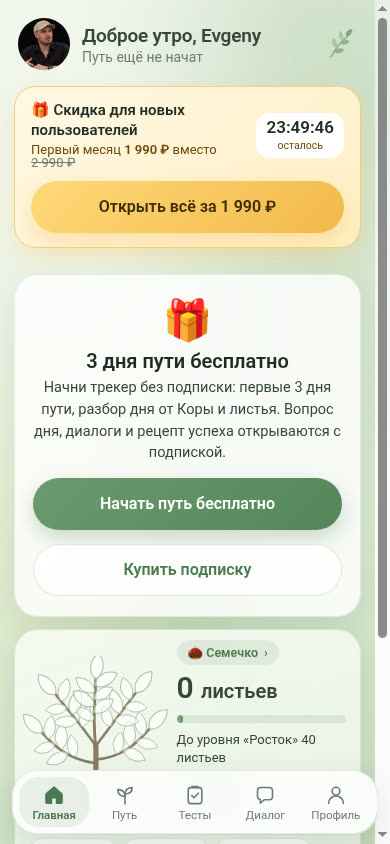
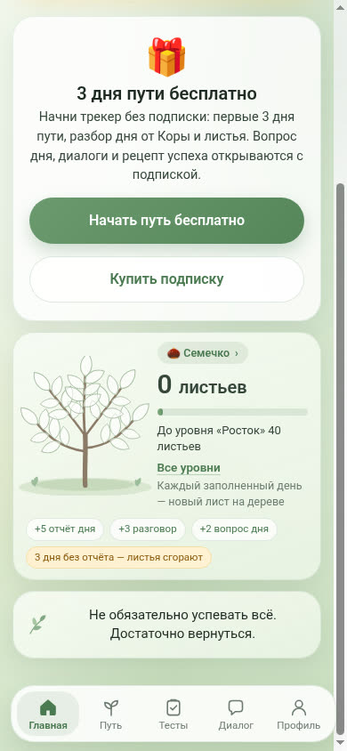
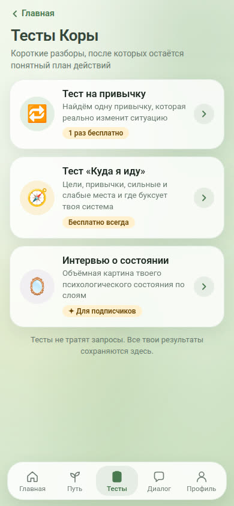
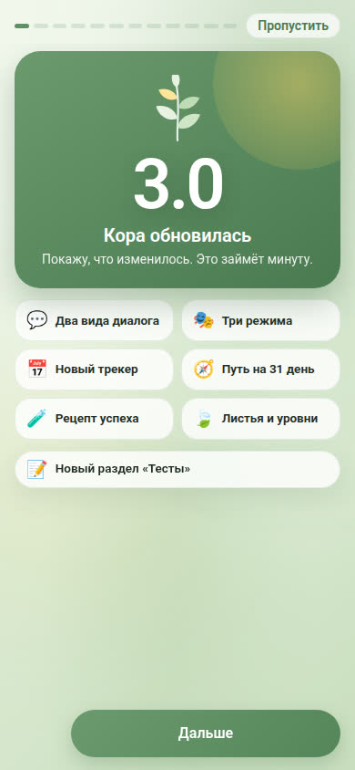

Кора: как устроен бот психолога и что сделать для Анны
Бот @Kora_psybot пройден с аккаунта Евгения 13 ноября: вход, меню, диалог, мини-приложение, тесты и кнопка оплаты.
Что это
Кора – нейро-бот психолога Ольги Особы (@wildspsy). Telegram показывает у бота 20 307 пользователей в месяц.
Внутри чат с искусственным интеллектом на методах Ольги и мини-приложение с трекером, тестами и программой на 7 дней.

Главная и скидка

Листья и уровни

Тесты

Режимы диалога
Как работает
ДиалогПишешь в чат, Кора отвечает как психолог: называет, что происходит, и задаёт уточняющий вопрос. В приложении три режима: Разбор, Поддержка и Крыса, когда хочется выговориться. Команда /summary даёт сводку разговора.
Проба на нашем вопросе«Муж задерживается и не пишет, я ревную». Кора не стала советовать сразу. Назвала тревогу от неизвестности и спросила, есть ли в задержках регулярность.
Трекер и путь на 31 деньКаждый день настроение, три привычки и пара строк в дневник. Кора разбирает день, неделю и месяц и собирает «рецепт успеха»: что помогает, а что выбивает.
Листья и деревоЗа отчёт, разговор и вопрос дня растут листья, дерево растёт от семечка до рощи. Три дня без отчёта, и листья сгорают. Это держит человека в продукте.
Тесты и программаТест «Куда я иду» бесплатный всегда, это вход. Программа «Разбор проблемы» на 7 дней продаётся отдельно.
Как зарабатывает
Бесплатно
10 сообщений, 3 дня трекера, тест «Куда я иду»
Подписка
2 990 ₽ в месяц, новичкам 1 990 ₽ с таймером на 24 часа
90 дней
7 900 ₽, первое списание 5 530 ₽
Дожим
через 5 минут после брошенной оплаты: «кажется, вы хотели купить подписку»
Удержание
со второго месяца закрытый клуб «Лес»: подкасты, флешмобы, сообщество
Из чего собран
Бот на конструкторе Puzzle Bot, приложение – веб-страница внутри Telegram, ответы пишет языковая модель с базой знаний психолога. На входе три согласия по закону: персональные данные, лицензия, рассылка.
У нас уже есть всё по частям: свои боты, сайты, база рилсов и текстов Анны. Есть её голос и воронки по кодовым словам.
План для Анны: «Анна в кармане»
Неделя 1. ДиалогБот в Telegram на методике Анны: её эфиры, практикум, тексты рилсов. Ответы текстом и её голосом. На входе бесплатный тест про отношения.
Неделя 2. Привычка и оплатаТрекер отношений на 21 день: настроение, одно действие для пары, разбор недели. Подписка с оплатой, напоминание о списании, дожим брошенной оплаты.
Неделя 3. ЗапускКодовые слова в рилсах ведут в бот: вместо статьи человек получает 10 вопросов Анне. Когда тема глубокая, бот ведёт на практикум «Новая реальность».
Что это даётПодписку каждый месяц, тёплую базу для практикума и живые вопросы женщин: из них темы рилсов.
Обязательно до запуска
Согласия на персональные данные и оферта.
Оговорка: бот не ставит диагнозы и не заменяет психотерапию.
Кризисный протокол: при мыслях о самоубийстве или насилии бот сразу даёт телефон доверия 8 800 2000 122 и не ведёт разговор дальше.
Проба на 50 настоящих вопросах до запуска, ответы смотрит Анна.
Нужно три решения
Согласна ли Анна на бота от своего имени.
Цена подписки.
Имя бота.
Выгрузка бота: описание, команды, все ответы меню, документы и снимки экранов лежат на сервере Джарвиса.